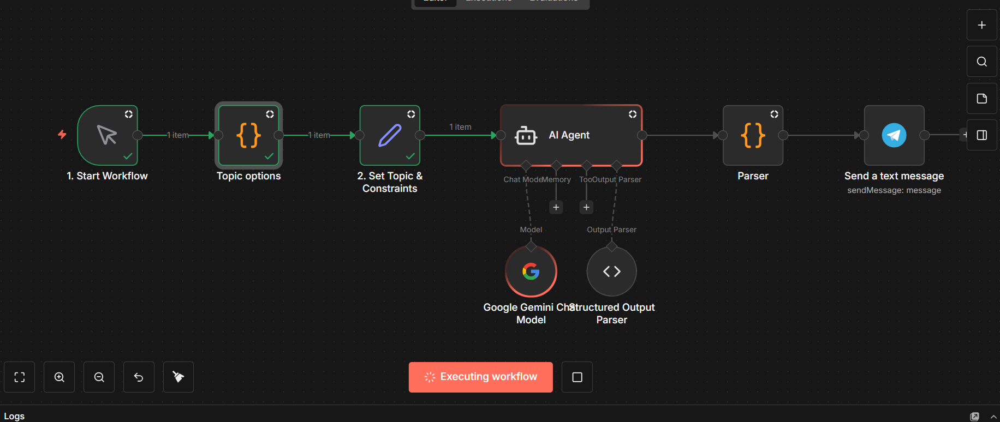
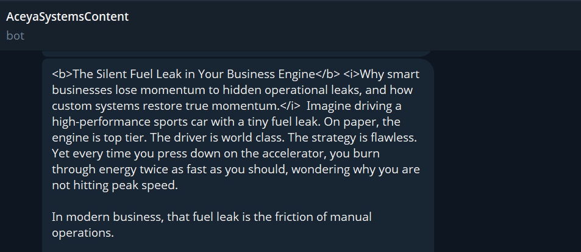

Home / Case Studies / Substack Content Generator
Automated Substack Content Generator
Built for Chisom Okafor · Aceya Systems
Every Substack issue started from a blank page.
Writing each issue manually meant choosing a topic, drafting a header and subtitle, writing the body, and getting the draft somewhere it could be reviewed. There was no repeatable system behind the process, so the same setup work had to happen every time.
Turn a topic idea into a structured, ready-to-edit draft.
The goal was to remove the manual drafting step while keeping the output useful and reviewable. The workflow should choose from a defined set of topics, apply writing constraints, generate consistent fields, and deliver the result directly to Telegram.
Topic selection → AI generation → structured parsing → Telegram.
The n8n pipeline keeps the creative generation step constrained and the final handoff practical.
Kick off the run
A trigger node starts the workflow.
Pick a direction
A Code node stores 10 preset topics, then an Edit Fields/Set node selects one at random and attaches the writing constraints.
Generate the draft
An AI Agent sends the topic and constraints to Google Gemini, with a Structured Output Parser enforcing header, subtitle, and body fields.
Send it to review
A secondary JSON/code parser cleans the response before a Telegram node sends the finished draft to Chisom's chat.
From random topic to a draft in Telegram.
The screenshots show both sides of the system: the n8n workflow that generates the draft and the Telegram delivery that makes the result easy to see and act on.


The manual drafting step is gone.
The pipeline is live and a structured draft now arrives automatically instead of being written from scratch for every issue. Time saved per issue has not been logged with hard numbers yet, so the next measurement is to time a handful of issues before and after the workflow.
Compare the time required to produce several issues manually with the time required to review and edit generated drafts.